Producer
Write a brief
Describe the film in a sentence, or drop in a script or subtitle file. Pick a style, a format and a length.
AuteurFrame is an open-source motion studio. Type a brief and a swarm of AI agents researches, writes, animates, critiques, scores and masters a finished film, and every frame stays yours to edit on a real timeline.
Runs on your machine · Works with any model · No API keys needed for media
Cartoon casts that act, rigged 3D characters, both in the same shot, and all 19 style packs, cut on the beat. Every frame of this reel was made and rendered inside AuteurFrame.
A team of specialised agents works like a real studio crew, in parallel, on one shared brain. You watch every step live and can step in at any moment.
Describe the film in a sentence, or drop in a script or subtitle file. Pick a style, a format and a length.
Agents search the open web for facts with sources and collect photos, footage, maps and sounds from open libraries, with no API keys.
The director writes the screenplay and timing; the art director locks palette, type, motion and texture from one of 19 style packs.
A voice reads the script while four animators write original scenes in parallel, previewing each one in the real renderer as they go.
The critic probes every frame for overflow, contrast, type size and dead motion, looks at the shots, and sends scenes back until they pass.
Music and sound effects are placed and ducked under the voice, and the editor masters a frame-exact film with captions in Full HD.
What you see on the stage is exactly what renders. Pause on any frame, move anything, edit the code, or ask an agent to rebuild one shot.
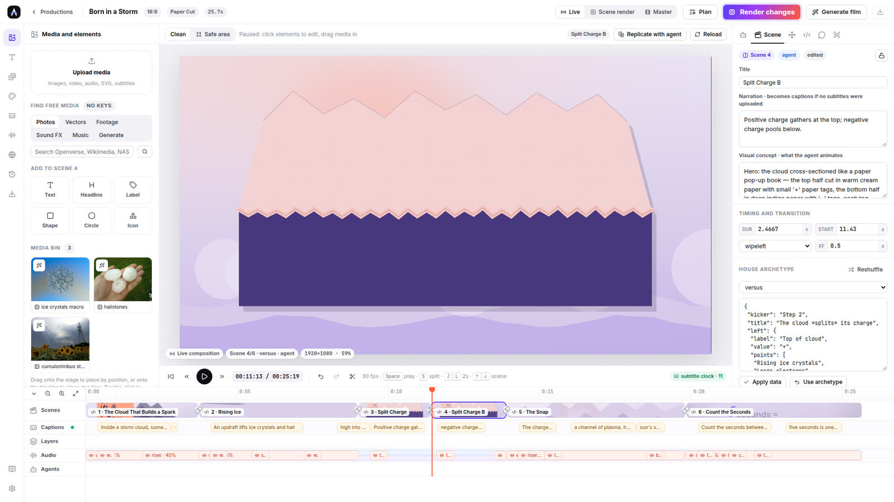
The studio: a live stage, the media library, the scene inspector and a multi-track timeline.
Ten specialised roles share one brain, stream their thinking live, and hand work to each other like a studio crew.
Every scene is new code on a frame-accurate GSAP timeline, so nothing looks stamped out and everything stays editable.
Layout, contrast, motion and readability are measured frame by frame, with a converging repair loop that knows when to stop.
Drag, trim, split and retime scenes, captions, layers and audio. Right-click any shot to rebuild it or extend the story.
Photos, footage, maps, data, voices and sound effects from open libraries, with the license recorded on every asset.
Claude, GPT, Gemini, DeepSeek, Mistral, Groq, xAI, OpenRouter, Ollama, LM Studio or any OpenAI-compatible API, per role.
Right-to-left scripts, Bangla, Hindi, Arabic, Japanese and more, with fonts served locally and captions locked to the voice.
21 templates need no AI at all, and new ones from the community arrive in every studio through the template feed.
21 directed templates render without any AI. Upload a logo, screens or photos, type a few lines, and every scene stays editable afterwards.
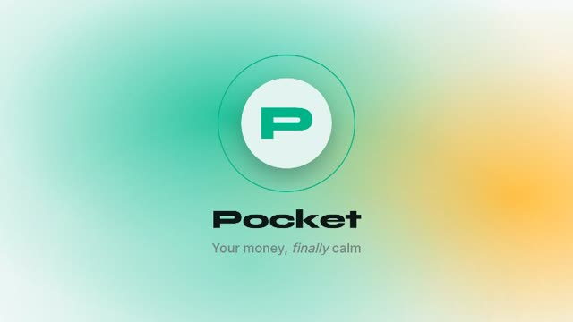
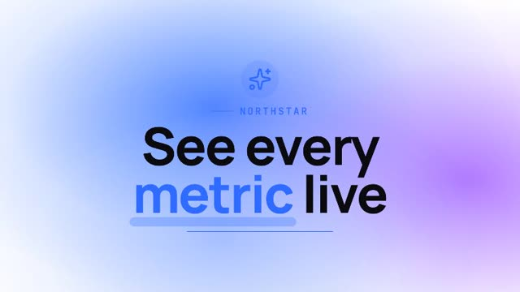
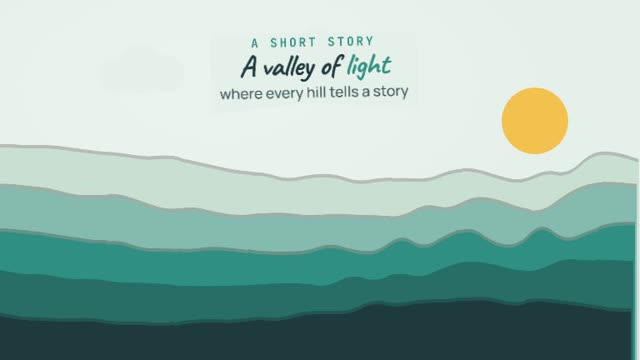
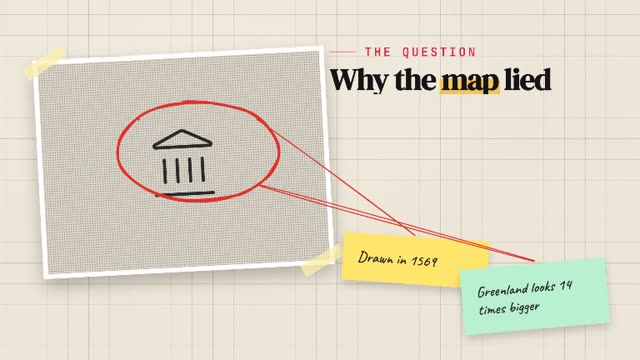
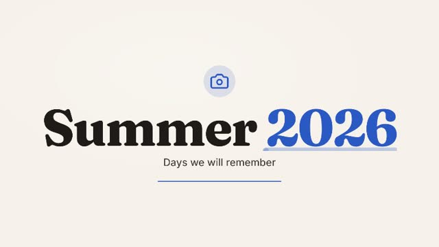
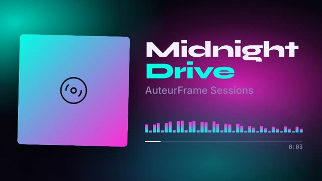
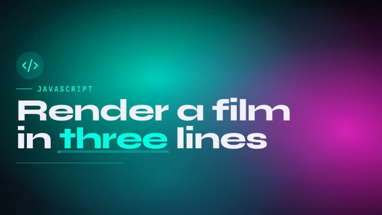
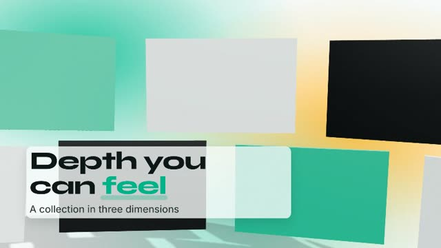
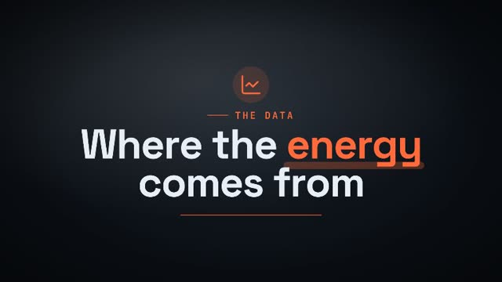
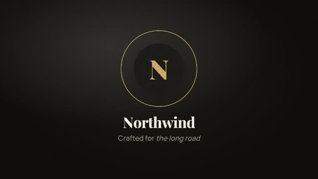
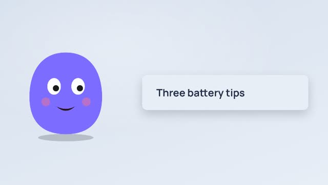
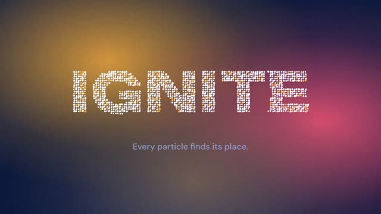
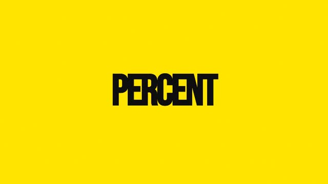
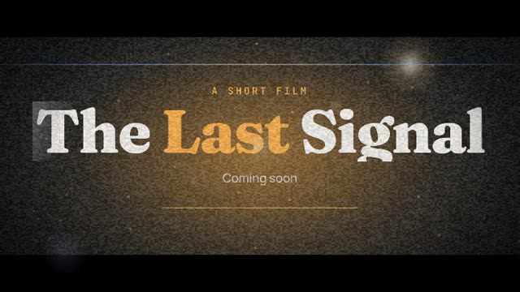
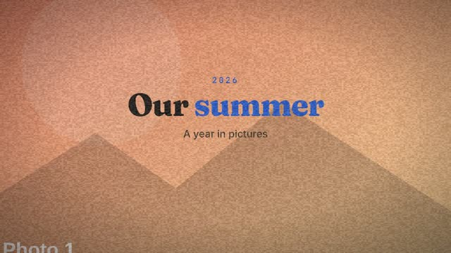
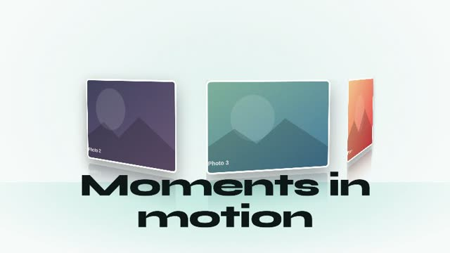
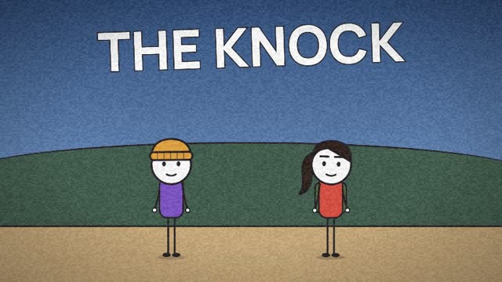
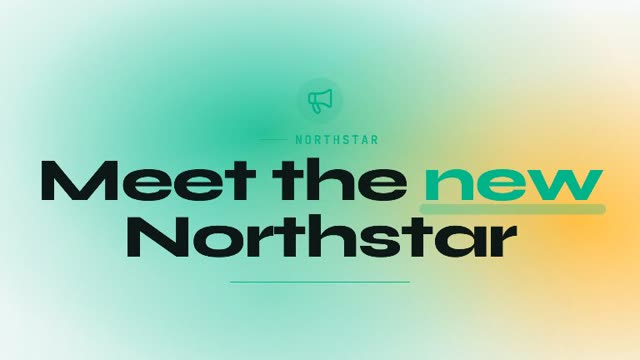
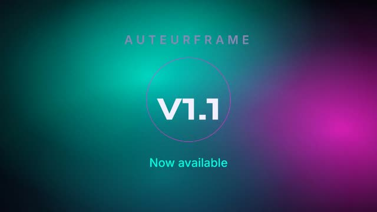
New templates arrive on their own. Templates published to the repository appear in every studio with one click, checked against a checksum. Anyone can publish one with a pull request.
Publish a templateFrames from films made in AuteurFrame, by the swarm and from templates.
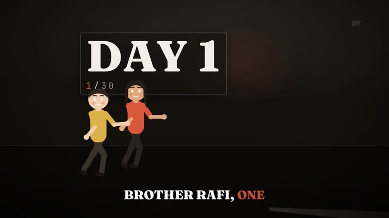
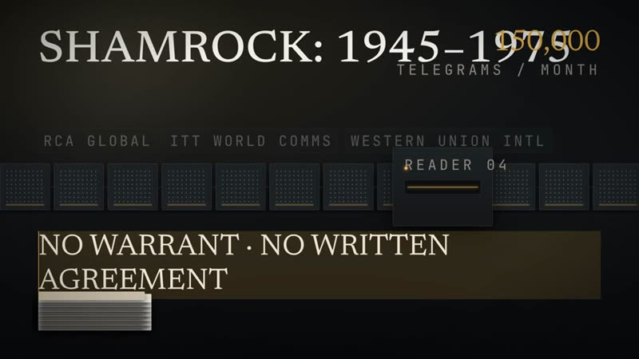
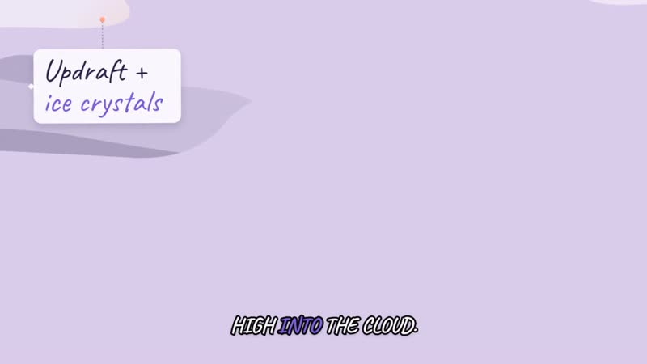
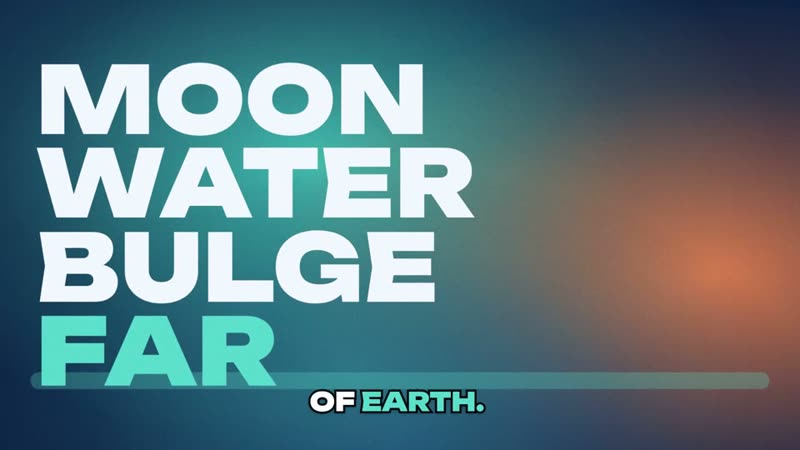
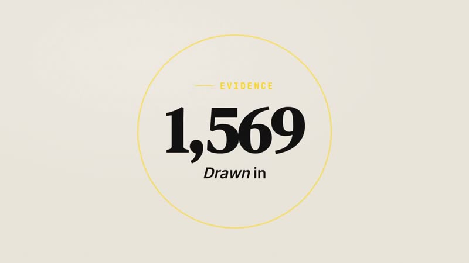
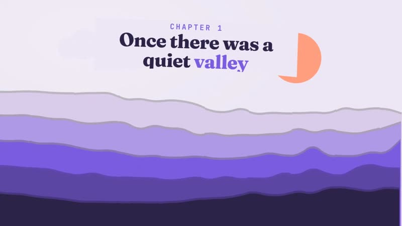
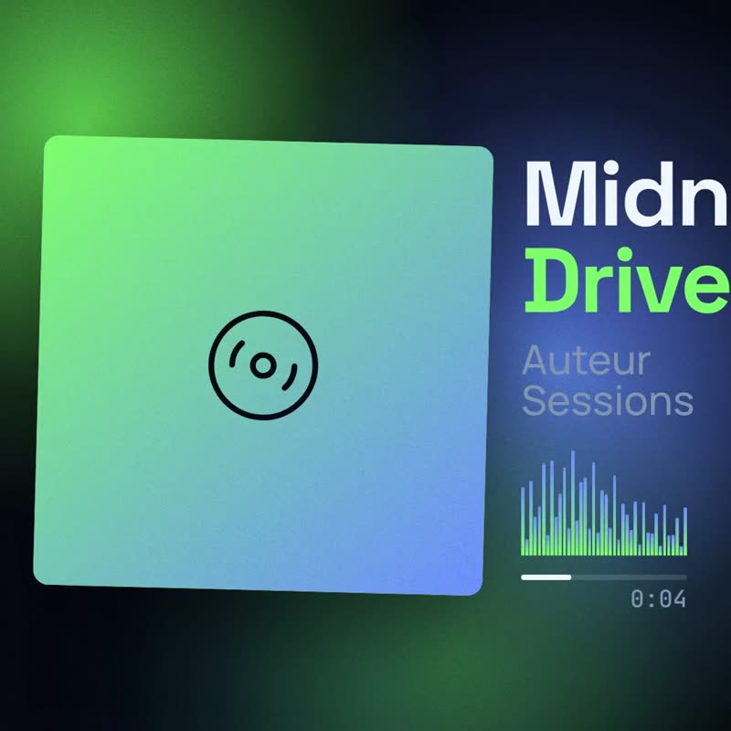
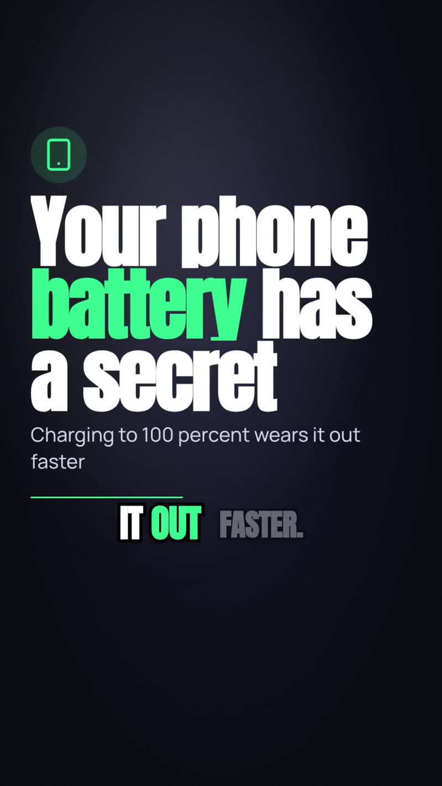
Install a few common tools, clone the repository and start the studio. Then open http://127.0.0.1:8800 and connect a model, or start with a template.
sudo apt update
sudo apt install -y python3 python3-venv python3-pip ffmpeg git curl
curl -fsSL https://deb.nodesource.com/setup_20.x | sudo -E bash -
sudo apt install -y nodejs
curl -fsSLo /tmp/chrome.deb https://dl.google.com/linux/direct/google-chrome-stable_current_amd64.deb
sudo apt install -y /tmp/chrome.deb
git clone https://github.com/joyghoshs/auteurframe.git
cd auteurframe
python3 -m venv .venv && source .venv/bin/activate
pip install -r requirements.txt
npm install && npm run vendor
python3 run.pywsl --install -d Ubuntu-24.04
git clone https://github.com/joyghoshs/auteurframe.git ~/auteurframe
cd ~/auteurframe
python3 -m venv .venv && source .venv/bin/activate
pip install -r requirements.txt
npm install && npm run vendor
python3 run.pybrew install python@3.12 node@20 ffmpeg git
brew install --cask google-chrome
git clone https://github.com/joyghoshs/auteurframe.git
cd auteurframe
python3.12 -m venv .venv && source .venv/bin/activate
pip install -r requirements.txt
npm install && npm run vendor
python3 run.pygit clone https://github.com/joyghoshs/auteurframe.git
cd auteurframe
docker compose -f docker/docker-compose.yml up --buildRoute each agent to a different model: a strong coder for the animators, a vision model for the critic, a fast one for research. Or run it all locally.
AuteurFrame is open source under the GNU AGPL v3, with a commercial license for teams that need different terms.
Templates are plain JSON. Open a pull request and, once it is merged, every AuteurFrame studio offers it on its next update check.
Create a branch such as template/quick-tip.
Write templates/<id>.json with slots and scenes.
Render it in your studio and run the template check.
CI validates it, a maintainer reviews it, and the bot publishes it.
Yes. It is open source under the GNU AGPL v3, so you can use it for anything, including paid work. If you share a modified version or run one as an online service, you must offer its source code. A commercial license is available if you cannot meet those conditions.
Yes. Rendered videos, posters and subtitles are yours. Media collected from open libraries keeps its own license, which AuteurFrame records with every asset, so check it before you publish.
Not to start. Templates and the house director work with no model at all. For agent-written films, connect any model you like, including a free local one through Ollama or LM Studio.
The software is free and runs on your machine. The only cost is the model you connect, and free tiers and local models work.
Linux and Windows through WSL2 are supported and tested, and Docker runs anywhere. macOS is expected to work but is not yet tested. 8 GB of RAM is the minimum and no GPU is needed.
No. Projects stay on your machine. Requests only go to the model and media services you choose, and the update check fetches one public file from the GitHub repository. You can turn it off.
The studio checks release.json in the repository and offers new templates with one click. Anyone can publish a template with a pull request; see CONTRIBUTING.md.
Install AuteurFrame, write one sentence, and watch a team of agents make your film.